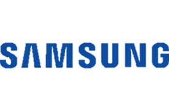

אנחנו חברת הטלפונים הגדולה בעולם
נוסדנו ב1938
ייסד לי בינג-צ'ול את חברת סמסונג בעיר דייגו שבקוריאה הדרומית. באותה שנה סמסונג החלה לייצר סוכר, פעילות שמאוחר יותר נמכרה לחברת מזון מקבוצה אחרת. בשנת 1958 החלה סמסונג להציע שירותי ביטוח. בשנת 1963 היא הקימה חנות "כל-בו" שנפתחה בעיר בשם קנג'יו. בשנת 1965 החלה סמסונג להפיץ ולמכור עיתון יומי (כיום העיתון אינו קיים). בשנת 1969 הוקמה חברת סמסונג-אלקטרוניק. בשנת 1974 נכנסה סמסונג לתחום התעשיות הכבדות, וב-1976 זכתה החברה לייצא מוצרים על ידי הממשלה הדרום-קוריאנית, כחלק ממדיניותה לעידוד ייזום ופיתוח. בשנת 1982 הקימה סמסונג קבוצת בייסבול מקצוענית. בשנת 1983 ייצרה החברה את שבב המחשב הראשון שלה: SDRAM 64K.
לקראת סוף שנות ה-80, סמסונג החלה להשקיע מאמצים באלקטרוניקה ופטרוכימיה.
בשנת 2008 סמסונג שברה כמה שיאים ונכנסה לספר השיאים של גינס בכמה קטגוריות:
Z370 – מכשיר טלפון נייד דור שלישי, בעובי של 8.4 מ"מ מסדרת ה-Ultra Edition, המהווה את הדגם הדק ביותר בקטגוריה זו.
U100, C210 – מסדרת ה-Ultra Edition, שני דגמים מקבילים אחד לשני, כאשר ה-U100 מיועד לשימוש ברשתות ה- GSM, וה-C210 לשימוש תחת טכנולוגיית ה-CDMA, ושניהם מחזיקים בשיא העולמי של הטלפון הדק ביותר בעולם – כ־5.9 מ"מ בלבד.
B600 – טלפון עם מצלמה דיגיטלית בעלת רזולוציית צילום מקסימלית של 10 מגה-פיקסלים, זום אופטי פי 3 ודיגיטלי פי 5, פוקוס אוטומטי על עצמים מצולמים, פלאש עוצמתי ומהירות לכידה של 1:2,000.
f480 – [דרושה הבהרה].
בשנת 1994 נוסדה חטיבת סמסונג מוטורס למכוניות, שנמכרה לאחר מכן ברובה (70%) לרנו. כמה דגמי רנו המיובאים לישראל, כגון רכב הפנאי "קולאוס" והמכונית המשפחתית "פלואנס" הם דגמים של סמסונג במקורם.